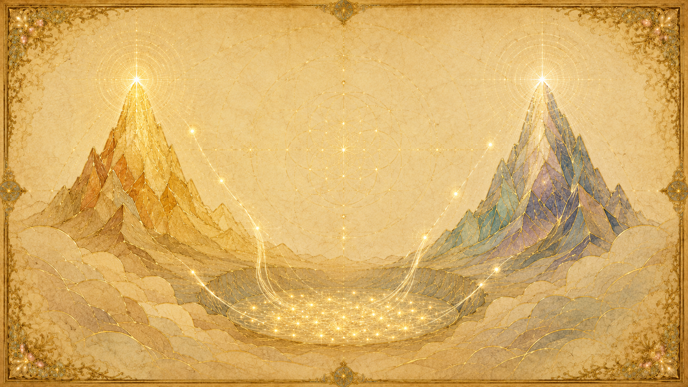
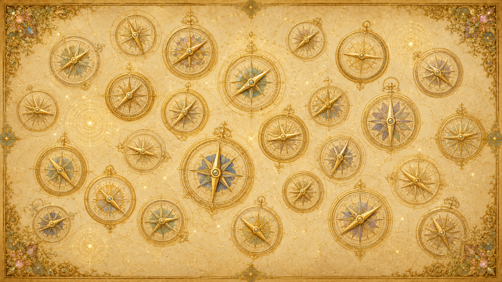

收割不是審判,是按振動頻率自然歸位
「實體將依其自身的選擇,被分離進入最令其心/身/靈複合體感到自在的振動扭曲之中。」
「收割」這個詞容易讓人聯想到末日審判——有個權威坐在寶座上,把人分成得救與被罰兩堆。但 Ra 描繪的圖像完全不是這樣。收割是一場畢業:一個密度的學習週期結束時,每個存有按自己這一生累積出的振動,自然地歸位到「最適合它繼續學習」的環境裡。
Ra 在很早的集會就把這個機制講清楚了:那些「結束了一個經驗的循環、展現出對那份思想與行動之理解的各種扭曲程度」的存有,「將依其自身的選擇,被分離進入最令其心/身/靈複合體感到自在的振動扭曲之中」。關鍵在「依其自身的選擇」與「最自在」——沒有外來的裁決,只有像水自然找到自己水平面那樣的歸位。
那麼是什麼決定歸位到哪裡?Ra 說,是「紫光」(violet ray)——一個存有整體振動的總和,而這個總和「在收割期間是不可改變的」。換句話說,收割不是看你臨終前怎麼表現、信了什麼教、懂不懂哪套學說,而是看你整個存在累積出來的那個振動底色。提問者後來把這層意思講成「按頻率分流」,Ra 從不糾正這個理解。
Ra 也用過一個更直觀的畫面:被收割的靈魂複合體「沿著光的路線移動,直到光變得太刺眼,於是這個存有停下」。每個人能承受多強的光,就停在那個亮度上——這就是它的位置。沒有人把你推到哪裡,是你自己的承載能力決定你停在哪一級台階。整件事「是自動的」。
大週期:三個 2.5 萬年,收割落在週期末
三個約 2.5 萬年的循環,共約 7.5 萬年
第三密度不是無限期延長的學校,它有明確的鐘點。Ra 說:一個族群「有一定的時間可以進展。這通常被劃分為三個 25,000 年的循環。在 75,000 年的末了,行星本身會進展」。換算下來,第三密度的完整時長約 7.5 萬到 7.6 萬年,內部切成三段,每段約 2.5 萬年。每一段循環的末了都是一次收割的機會,等於同一所學校開了三次畢業典禮——前兩次沒畢業的,還能留下來重修,直到第三次週期結束、全部結算。
時程像時鐘一樣精準,與地表發生什麼無關
這個時程不是模糊的趨勢,而是像鐘擺一樣不可動搖。Ra 形容:「這活生生的流動創造出一種韻律,如同你們的計時器一樣不可避免……這些循環的時序,是一段等同於智能能量的量度。這份智能能量提供了一種時鐘。」祂進一步說:「這些循環移動得就像你們的時鐘敲響整點一樣精準。因此,從智能能量通往智能無限的門戶,不論情況如何,都會在整點敲響時打開。」
這句「不論情況如何」很重要:收割的時間是預定的、機械般精準的,不會因為地表上人類進展得快或慢而提前或延後。門戶到點就開——能通過的就通過,通不過的就進下一輪。
每顆行星有各自的時刻表
不過,各行星並非同步起跑。Ra 說:「你們每一個行星實體,都是在那個環境的能量交點有能力支撐這類心/身/靈體驗時,才開始了第一個循環。因此,如你所說,你們每一個行星實體,都處在不同的循環時刻表上。」也就是說,7.5 萬年這個架構通用,但每顆行星的鐘是各自起算的,地球有地球的時刻表。
地球的收割並不是到了第三個週期末才忽然開始。Ra 提到,收割「開始發生在第二個循環的後段」——大約 2.5 萬年前,就已經有個別存有找到了通往智能無限的門戶。「那個時候的收穫,雖然極小,卻是那些對服務有著極端扭曲(極端傾向)的存有。」收割是漸進累積的,只是真正的大結算落在週期的盡頭。
收割的判準:51% 對 95%,以及「冷漠的水坑」

正向收割與負向收割的兩個門檻
Ra 把及格線說得很具體。要被收割進「正向的第四密度」,必須做到「服務他人超過百分之五十」、且「服務自己低於百分之五十」——也就是約 51% 服務他人。而想走服務自己這條路被收割的存有,「必須達到五分的等第,也就是百分之五服務他人、百分之九十五服務自己」。負向之路的及格線高得多,幾乎要把對他人的服務逼近於零。
只有一場收割,通過之後才分流
值得留意的是次序:Ra 說「只有一場收割」。能透過振動複合層級進入第四密度的存有,接著「可以選擇它進一步尋求那唯一造物者的方式」。提問者把它理解成:進入第四密度的存有會分成選擇服務他人世界的、與選擇服務自己世界的兩群,Ra 確認:「這是正確的。」先畢業,再分班——正向班與負向班,而不是先被審判成好人壞人。
為什麼負向門檻這麼高——努力的對稱
負向門檻 95% 看似遠比正向的 51% 苛刻,但 Ra 指出兩端其實一樣難。祂說:「要達到對其他自我百分之五十一的奉獻,跟達到只剩百分之五對其他自我的奉獻,是一樣困難的。」橫亙在這兩端之間的,是祂所謂「冷漠的水坑」(the sinkhole of indifference)。
大多數人卡在中間那片不冷不熱、不選邊、不投入的地帶。要從水坑裡爬出來——無論往哪一邊——都需要強烈的意志與純度。正向只需越過半數的牆,負向卻需逼近滿格的牆;但「脫離冷漠、做出明確選擇」這件事本身,就是兩條路共同的、最難跨過的關卡。被收割的關鍵,首先是「有沒有真正選邊」。
收割不要求「懂」,但通常帶著光輝
Ra 澄清一個常見誤解:被收割進第四密度,並不需要在智識上理解「合一法則」這套學說。一個人「信奉任何宗教、或不信任何宗教,或對合一法則、乃至對任何事物毫無智識上的認識,仍然可以被收割進第四密度——只要它是那個振動」。(到了第五密度的收割,「有意識地接受合一法則的責任/榮耀」才變成必要。)
不過 Ra 補充:雖然不必「懂」,可收割者通常藏不住。「你會發現,可收割者當中,鮮少有人的光輝不會讓他人察覺到其……靈性、其心/身/靈複合體扭曲的品質。」振動騙不了人。
極化幾乎必然增加可收割性
判準的最後一塊,是極化與可收割性的綁定關係。Ra 說:「在這個密度,服務他人或服務自己的增加,幾乎不可避免地會增加一個存有享受更高強度之光的能力。」結論是:「因此在這個密度,我們可以說,極化卻不增加可收割性,是幾乎不可能的。」在第三密度,只要你真的往任一極走,你承載光的能力就跟著長,可收割性就跟著漲——兩者綁在一起。(Ra 也指出,到了第五密度的收割,「極化與可收割性幾乎無關」——這層綁定是第三密度特有的。)
地球目前的收割:一場「困難的收穫」

時空上已是第四密度,存在上仍是第三密度
地球正卡在一個過渡的縫隙裡。Ra 說得很精準:「你們所居住的這顆球體,在其心/身/靈複合體的存在性上,是第三密度。它如今處於一個時空連續體中,則是第四密度。」存在(being)還是三密度,時空(space/time)已經是四密度。緊接著祂下了那句關鍵評語:「這正造成一場相當困難的收穫(a somewhat difficult harvest)。」
行星過渡:像時鐘敲整點一樣規律
Ra 解釋這場過渡的機制:「第四密度,如我們所說,其臨近就像時鐘敲響整點一樣規律。你們太陽系的時空,已使這顆行星球體得以螺旋進入一個不同振動配置的時空。」這使行星本身「能夠被這些新的扭曲所塑造」。行星這一端,是準時、機械、不可逆的;真正出狀況的是上面的人。
為什麼可收穫的人少——指針無法指向同一方向
Ra 點出地球收穫之所以困難的核心:「然而,你們人們在這個過渡期的思想形態(thought-forms),使得個體與社會的心/身/靈複合體散布在整個光譜上,而非變得能夠抓住那根指針、把羅盤指向單一方向。」大多數人既沒有強烈地走向服務他人,也沒有決絕地走向服務自己,而是散落在中間——正是前一節說的那片「冷漠的水坑」。
於是 Ra 給出結論:「進入愛的振動……對當前的社會複合體而言並不奏效。因此,這場收穫將會是這樣:許多人會重複第三密度的循環。」可收穫的人少,不是因為門檻被調高,而是因為太多人沒有真正選邊、沒有把羅盤指向任何一個方向。
現在就是收割,功課是「尋求自我的核心」
對於此刻該做什麼,Ra 的指引很直接:「收割就是現在。此時沒有理由把努力放在那些朝向長壽的扭曲上,而應該鼓勵朝向尋求自我核心(seeking the heart of self)的扭曲,因為這個——清楚地安住於紫光能量場中的東西——將決定每一個心/身/靈複合體的收割。」延長壽命、向外求都不是重點;向內尋求自我的核心,讓紫光振動定型,才是這場收割真正要做的功課。被問到究竟會有多少人可收穫,Ra 不願給數字,只說自己是「僕人」,工作是「盡可能創造一場大的收穫」。
收割的機制:沿著光走,直到光太刺眼
用「光」量度:走到光太刺眼處就停下
收割如何「量度」一個存有?Ra 給的不是磅秤,而是光。被收割的靈魂複合體「沿著光的路線移動,直到光變得太刺眼,於是這個存有停下」。每個存有能承受的光強度不同,而它的紫光振動決定了它能走到多亮的地方——能承受四密度之光的,就進入四密度;只能承受三密度之光的,就停在三密度。整個過程是自動的:「收割是自動的,因為被收割者會依照那個在收割期間不可改變的東西作出反應,那就是紫光的放射。」
收割大師:三個層級的守護與監督
雖然過程自動,Ra 說仍需要監督,以免好果子被碰傷。祂用收成水果作比:「果實會照它本來的樣子形成,但需要某種監督,以確保這份豐收被妥善安置,不帶瘀傷或瑕疵。」這份監督分三個層級:
第一層——更高自我與內在層面的存有:「這類守護者包括一個存有的心/身/靈複合體整體或更高自我,以及那些因它的內在尋求而被吸引來的內在層面存有。」
第二層——邦聯:「那些邦聯成員,擔負著站在光/愛階梯邊緣那些小小位置的責任/榮耀,好讓被收割的存有不會因為任何理由——除了光本身的強度以外——而踉蹌跌落。這些邦聯存有會接住踉蹌者,把他扶正。」
第三層——守護者(Guardians):「那一群你們稱為守護者的存有。這一群來自我們上方的那個八度,以這種方式作為帶光者(light-bringers)服務。這些守護者提供精確的光/愛放射,以極其細緻、富有辨別力的散布,好讓每個存有精確的光/愛振動能被確定。」
監督不是干預結果,而是保障公平
要強調的是,這三層守護者並不改變誰能畢業——能不能通過,純由各人的紫光放射決定。他們的角色是確保「每個存有都能有最充分的機會表達它的紫光自我」:接住因外在因素(而非因光的強度)而失足的人,把每個人的振動量度得精確無誤。這比較像畢業典禮上維持秩序、確保沒人因為意外而被誤判的工作人員,而不是打分數的考官。考官,是每個存有自己累積的那道光。
收割後去哪:畢業進四密度,或重修三密度
畢業者:進入第四密度,正向或負向
通過收割的存有進入第四密度。Ra 說,落在「這道日益增強的光/愛八度之內」的存有,「接著會經歷一個大循環,在其中有許多機會去發現每個存有內在固有的扭曲,並因而減輕這些扭曲」。第四密度仍是一所學校,只是課程不同:三密度學的是「抉擇」,四密度起學的是對這個抉擇持續的精煉。畢業之後再依先前那場唯一的收割分流——進入正向(服務他人)的四密度,或負向(服務自己)的四密度。
「重複第三密度循環」是什麼意思
沒通過收割的人並不會消失或受罰,而是「重修」。Ra 在談地球時直說:「這場收穫將會是這樣:許多人會重複第三密度的循環。」對於沒能畢業進入正向四密度的存有,Ra 說他們會前往「另一顆第三密度行星」。注意是「另一顆」——因為地球這顆球體本身正在轉成第四密度,不再是適合重修第三密度功課的環境了。所以重修的人會被移置到一顆仍處於第三密度的新行星,從頭再走一遍 2.5 萬年的循環,直到準備好。這不是懲罰,而是給足機會:同一所學校的學分,沒修滿就再上一輪。
按自身選擇歸位到「最自在」的振動
無論去哪,主導原則都是 Ra 最早那句話:存有「將依其自身的選擇,被分離進入最令其心/身/靈複合體感到自在的振動扭曲之中」。畢業生去四密度,是因為那裡的光對它最自在;重修生去另一顆三密度行星,是因為三密度的光仍是它此刻最能承受、最能繼續學習的環境。歸位的依據始終是「自在」與「自身的選擇」,不是賞罰。
收割與身體、與地球變動的關係
過渡身體:四密度的身體是逐漸長出來的
身體層面的過渡也是漸進的,不是一夕之間換殼。Ra 澄清一個常見誤解:第四密度的身體「會是漸進的創造,將從你們第三密度類型的物質載具開始,並透過雙性生殖,經由演化過程,成為第四密度的身體複合體」。等到「真實色彩綠光(愛)密度完全啟動時,這顆行星球體將能憑自身堅實地、可居住地存在」,而誕生於其上的存有也會「透過時間的過程被轉化成適當類型的載具」,以充分領受第四密度的行星環境。
過渡期還存在一種特殊的「雙重身體」存有。Ra 描述,某些存有有「一個處於啟動狀態的雙重身體」,這讓他們能「在內流增強時領受第四密度的振動複合體,而不伴隨第三密度身體的瓦解」。這種安排的用意,是讓「第四密度的體驗得以開始」,並對一個傾向服務他人的存有額外有吸引力——它能「居住在一個動盪的第三密度環境中,獻出它的愛與慈悲」。而這個三、四密度合一的身體,仍會「依照第三密度心/身/靈複合體扭曲的必要而死亡」。
地球變動:混合收穫帶來的不和諧催化劑
那麼地震、災變這類「地球變動(Earth changes)」跟收割是什麼關係?Ra 先給了一組行星收穫的概率(就一般行星收穫而言):「大約 10% 是負向的;大約 60% 是正向的;大約 30% 是混合的,而混合收穫中幾乎所有的收割都是正向的。」祂並補充,在混合收穫的情況下,「收穫的大多數是負向的,這幾乎是聞所未聞的」。地球正屬於這種「混合收穫」。
而混合收穫恰恰與地球變動相連。Ra 說:「在混合收穫的情況下,幾乎總是有不和諧,因此會以你們所謂『地球變動』的形式,增添催化劑。」更重要的是,祂把根源指回意識本身:「意識為它自己提供了催化劑——透過它如此這般地定向自己的思想——因而作用在它自己身上,正如身體的疼痛與疾病的催化劑作用在單一的心/身/靈複合體上一樣。」
換句話說,地球變動不是天降的懲罰,而比較像一個失衡的身體發出的「症狀」:行星上散落於光譜、彼此不和諧的集體意識,為自己招來了再平衡用的催化劑。它與收割的困難是同一件事的兩面——羅盤指不向同一方向,既造成可收穫者少,也化為地表的動盪。至於這些催化劑究竟會不會增加最終可收穫的人數,Ra 拒絕預測,只重申自己是「僕人」,不適合去投射收穫成果的數字。